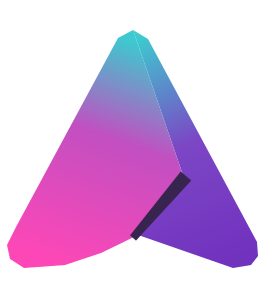

| NOME | RM |
|---|---|
| Amanda Ayumi Guedes Ueno | RM573609 |
| Ana Rubia de Oliveira Freire | RM573171 |
| Francisco Caetano Bernardes | RM571399 |
| Giovanna Camargo Budin | RM571861 |
| Mariana Costa Cruz Maciel | RM570455 |
A Aurora é uma plataforma (fictícia) de People Analytics voltada a empresas de médio e grande porte. Ela integra fontes dispersas de dados de RH (HRIS, folha, ATS, pulse surveys), cruza indicadores em tempo real e entrega insights acionáveis — reduzindo turnover, aumentando engajamento e acelerando decisões da liderança. A proposta de valor para o público B2B: transformar dados de pessoas em decisão estratégica com impacto financeiro demonstrável.
Deploy por integração com o repositório GitHub, com publicação automática a cada push na branch main. O formulário usa Netlify Forms, sem necessidade de backend próprio — mantendo o projeto 100% HTML/CSS/JS, conforme o enunciado. HTTPS automático, previews por pull request e plano gratuito suficiente para o escopo.
Nenhum framework ou bundler. O JavaScript foi extraído para js/main.js e a lógica da calculadora isolada em js/roi.js, com testes automatizados via node --test tests/roi.test.js.
Fundo claro #F6F5F8, texto quase-preto #17141D, magenta #A81F62 como cor de acento principal, teal #12796C e roxo #574587 como apoio. Tipografia Archivo, pesos 700–800. Layout assimétrico e tipografia editorial forte, em que cada seção é um instrumento que o visitante opera — não apenas texto.
Sem mudanças estruturais na landing page: a Etapa 2 já atendia aos requisitos técnicos da Etapa 3. O trabalho desta etapa foi um QA de verificação, executado ao vivo na página publicada.
Sem erros JavaScript durante carregamento e uso. Submissão do formulário testada de ponta a ponta: mensagem "Recebido. O time da Aurora responde em até 1 dia útil com dois horários." exibida inline após o envio, confirmando o Netlify Forms em produção.
Sliders do modelo de risco e abas "Pergunte à Aurora" testados e funcionando. Responsividade e prefers-reduced-motion confirmados por inspeção do código-fonte: breakpoints mobile-first em todas as seções e bloco global zerando animações quando o sistema operacional pede movimento reduzido.
| Recurso | Onde | WCAG 2.1 |
|---|---|---|
| HTML semântico, um único h1 | Página inteira | 1.3.1 |
| Skip-link "Ir para o conteúdo principal" | Topo do body | 2.4.1 |
| Sliders nativos com rótulo e aria-valuetext | Hero, Diagnóstico, Calculadora | 2.1.1, 4.1.2 |
| Abas com padrão ARIA completo | A plataforma | 2.1.1, 4.1.2 |
| Regiões aria-live nos medidores e no razonete | Hero, Diagnóstico, Calculadora | 4.1.3 |
| role="alert" no erro do formulário | Agendar demonstração | 4.1.3 |
| Foco sempre visível (:focus-visible) | Todos os interativos | 2.4.7 |
| label associado a cada campo | Formulário | 1.3.1, 3.3.2 |
| prefers-reduced-motion respeitado | Hexágono, medidores, calculadora | 2.3.3 |
| Contraste AA; informação não só por cor | Página inteira | 1.4.1, 1.4.3 |
| Sem rolagem horizontal de 360px a 1280px, zoom 200% | Página inteira | 1.4.4, 1.4.10 |
Clone o repositório e sirva o projeto localmente:
git clone https://github.com/defxico/aurora-project.git cd aurora-project npx --yes serve . # abrir o endereço mostrado no terminal (ex.: http://localhost:3000) # testes automatizados da calculadora de ROI: node --test tests/roi.test.js